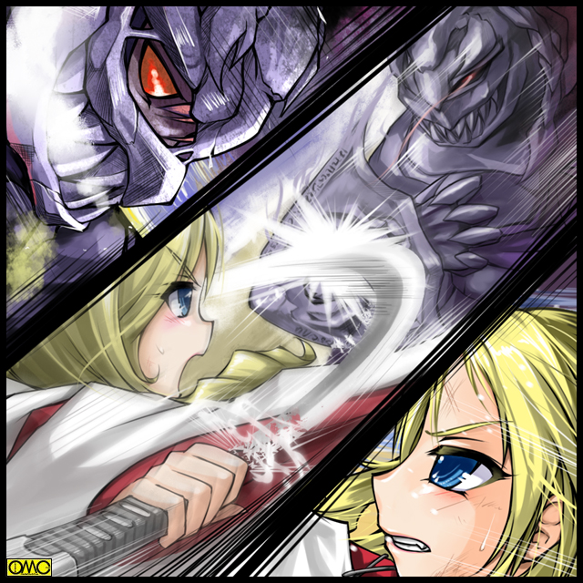

まさに目にも留まらぬ速さでセーラ・フェアリーフォームが空を行く。
あまり早くて逆に目撃されていない。
「セ…セーラ様。速過ぎますぅ」
セーラに抱きかかえられている黒猫。キャロルが思わず言うほどである。
しかしセーラは真摯な表情で口を真一文字に結び、ひたすら飛んでいた。
何故かキャロルを抱きかかえる右手には、アーチャーフィッシュアマッドネスが作戦で投げたボールが握り締められている。
寝ていて災害が発生して枕を抱きかかえて逃げるようなものか？
とにかくひたすらに飛ぶ。目指すは王真高校。嫌な予感がする。
戦乙女セーラ
ＥＰＩＳＯＤＥ１４ 「決別」
「死ね。ブレーイザ」
放心状態の礼の頭上に恐怖の斧が振り下ろされたその刹那。
ありえないカーブを描いてボールが真横から斧に直撃。
振り下ろしていたためそのまま地面に派手な音を立ててめり込む。
「誰だ？」
邪魔をするものを見回すスコーピオンアマッドネス。
しかし目の前には相変わらず目の焦点のあっていない礼と、付き従う森本だけ。
かすかに聞こえる呼吸音を察知して見上げると、セーラが息も絶え絶えという感じで空中にたたずんでいた。
「ま…間にあったぁ」
セーラ・フェアリーフォームは球状のものを自在にコントロールして投げられる能力がある。
だからありえないカーブで斧に当たったのである。
もちろんアマッドネスを感知できてもそれがどんな相手かまではわからない。
だがとりあえず妨害するための「飛び道具」としてボールを拾っておいたのである。
「く…役立たずめ。足止めすら出来んか」
さらには先刻の派手な音が生徒を集めていた。
スコーピオンアマッドネスはドクトル・ゲーリングの姿に戻り、礼を一瞥した。
それはまるで別れの挨拶のように見えた。
感傷に浸る間もなく「彼」は生徒たちの中に逃げていく。
「待ちなさいよ」
瞬時にエンジェルフォームに戻り、さらに王真の女子制服に。
これなら自在に校内を移動できる。さらに言うなら礼とはもめてもいるのを見られている。
この「襲撃」が自分のせいにされてはたまらないというのもあった。
後を追ったセーラだったが、さすがに地の利は教師であったドクトルに働き逃げ切られた。
「ああんっ。もう」
悔しがるが感知できない。敵は人の姿のままのようだ。
諦めて彼女は元の場所へと戻る。
そこではまだ礼が蹲っていた。
スコーピオンアマッドネスが穿った地面の穴を見ている。
それは確かに敬愛する師匠が自分を殺そうとした証。
「……ドクトル」
「副会長……」
付き従う森本もなんと声をかけていいかわからない。
セーラにもわからない。だから見守ることしか出来なかった。
「あ…あの…元気だしなよ。これは仕方ないことだよ。誰にだって弱い部分があるし」
「キサマに何がわかる！」
あまりと言えばあまりの礼の言い方にむっとしたセーラは、思わず反論する。
「わかんないわよ。男のクセにうじうじして」
時間経過ですっかり女の方が基準になっていたのでこの台詞。
売り言葉に買い言葉。だがこれが逆に幸いした。
落ち込んでいた礼の心を引っ張りあげた。
「言った筈だ。お前の助けなどいらんと。ましてや俺とドクトルの間の問題。誰にも邪魔はさせん」
強くて、憎らしい表情が戻ってきた。
「ふーんだ。泣いて頼んでも知らないから」
悪態をつきながらもセーラは笑顔だった。
（これなら大丈夫そうね）
そう判断した彼女は森本に任せて立ち去ることにした。
普通に校門から出て、人目につかないところで別の女の子に成りすまして帰るつもりだった。
「高岩さん」
その背中に呼び止める声。
「森本君？ 礼はいいの？」
女性化したためか呼称まで変わっている。
「いえ…そうとうにショックだと思います。本当にドクトル・ゲーリングを尊敬してましたから」
そんな相手に殺されかけた。さらには宿敵であるアマッドネスになってである。
その衝撃は計り知れない。
「そうよねぇ」
顎に右手の人差し指を当てて、可愛らしく相槌を打つセーラ。
「だから高岩さん。どうか…」
言葉を続けようとする森本の口に、自分の顎に当てていた人差し指を「黙って」というように当てる。
「この姿の時はセーラって呼んでちょうだい。ね。わかった？」
にっこりと「お姉さん」な微笑を。
「あ。はい。わかりました。セーラさん」
礼…ブレイザという存在に近いからか、清良とセーラのギャップも理解できるらしい。
「それでセーラさん。副会長に何かあったら連絡をしたいので」
「わかったわ。番号とメールアドレス交換しましょ」
彼女はスカートのポケットからピンクの可愛らしい携帯電話を取り出した。
「セーラさんだとそんな風に変るんですね」
どうやら礼がブレイザになった際も持ち物が女性的に変化するらしい。
「あ。ブレイザもやっぱりあたしみたいに服を変えられるのね」
「はい。副会長は大人っぽいのを好みます」
「どうせあたしはお子ちゃまですよーだ」
舌を出してみせる。
傍目には男の子と女の子の微笑ましいやり取りだが……
すっかり女性化した中身で帰宅。
またもや妹の理恵が首をひねる中で食事をとり、自室にこもるともはや趣味になりつつあるファッションやメイクの研究に。
疲れて眠りリセットされて、朝起きて…
「セーラ様。学校が始まりますよ」
「知るか！ ああ。またやっちまったぁぁぁぁ。何だあの『先輩女子』ぶりはよぉぉぉぉぉ？」
またもやカメのようにふとんに包まっていた。
翌日。予想通りではあるがゲーリングは学校に来ない。連絡もない。
当然だ。既に正体を礼に知られているのだ。来るはずがない。
誠実な夫と父の顔で家庭に戻っていたゲーリングは、学校に行くと言い残して家を出た。
しかし行かずに海岸で佇んでいた。
（私の中に悪魔がいる）
相性の問題なのか意識が完全に混じり合わずにいた。
（悪魔と呼ぶか。いいさ。だがお前はこの「強さ」の代りに魂を差し出したのだ。今更何を躊躇う）
こちらはスコーピオンアマッドネス…スストの意識だ。
（違う。私の呼ぶ「悪魔」とはレイに対する殺意のことだ）
若くして優秀な伊藤礼。
その才能を認めた故にゲーリングは彼を教え子とし、同時に才能に嫉妬して殺める決意までした。
（やればいい。奴がお前より優秀というならお前は返り討ちにあうだろう。出来ないなら、それまでだ）
（むう……）
その文字通りの悪魔のささやきが彼を動かした。
携帯電話を取り出してメールの文章を打ち込み始めた。
「……決着をか……」
三時限目の終わった頃にメールを受け取った礼は悲壮な表情になる。
神奈川県の三浦海岸で３時に待つ。
それがゲーリングからの文面だった。
彼は携帯電話を懐にしまおうとして落とすが、既に気持ちがゲーリングのことに向いていたので気がつかないまま。
まだ四時限目以降の授業があるというのに、彼は足早に外へと向かう。
福真高校。いい加減に女性化しての行動にも慣れた清良は、ちゃんと登校出来るほどにはなっていた。
しかし恥じ入っているのか、ひたすら沈黙を保っている。
王真高校。
「あれ？ 副会長いないんですか？」
２年の教室を訪ねてきた森本は不在と聞かされて首をかしげる。
「ああ。珍しく忘れ物までしてやがる」
応対した同じ生徒会の２年か礼の落とした携帯電話を見せる。
「副会長が忘れ物？」
人間だから忘れ物くらいするであろうが、それでも珍しいのは確かだった。
「ちょっといいですか？」
そう言われて先輩男子は携帯を手渡す。受け取った森本は躊躇いなくディスプレイを見る。
「バカ！ 他人の携帯を見る奴があるか」
それもあり誰もゲーリングからのメールを見ていない。
嫌な予感で思わずメールを確認した森本はその文面に青くなる。
彼は自分の携帯を出して清良に電話する。
「なんだと！？ 三浦海岸で伊藤が決闘？」
相手がアマッドネスというならいつものこと。しかし
『はい。ですが相手がドクトル・ゲーリングでは副会長が平常心でいられるとは思えません』
それを案じて清良に救いを求める森本。
「あの馬鹿が…」
電話を切ると清良も学校を飛び出した。
テレパシーでキャロルを呼び出し、合流する。
そして猛スピードでバイクモードを走らせる。
スピード違反で白バイに追われるがこれも振り切る。
だがその追跡時に「手配」の有ったバイクと判明し、連絡が薫子のところに行く。
すぐさま振り切られた場所へと車を走らせる薫子。
もちろん神奈川県警に連絡するのも忘れない。
三浦海岸。
まだ五月下旬では海水浴客などいるはずもない。
さらに言うなら遊泳禁止エリアゆえにマリンスポーツをする者もいない。
誰もいないし、建造物もない。
ブレイザも遠慮なく剣を振るえるであろう。そういう狙いでの場所の指定である。
「レイ。ここがお前の墓場となる」
「そいつはどうかな？」
つぶやきに対して答える声。待ち人来る。礼が到着していた。
「案外ドクトル・ゲー…………スコーピオンアマッドネス！ お前の墓場かも知れんぞ」
ドクトルの名を呼ぼうとして彼は思いなおした。
目の前の存在は敵だ。師匠ではないと。それに徹した言い方に変えた。
そして彼はいつものように対峙する。
「ばか者め。なぜ先に変身しない？」
その言葉と同時にゲーリングはサソリ女へと変貌する。
礼には躊躇が有った。
いかにアマッドネスに取り付かれたといえど師匠。それと対決することに。
それゆえ戦闘形態になるのを先送りしていた。
しかし相手が殺意をむき出しではそうも言っていられない。
礼は右手を前に。左手をへその位置にかざす。だがスコーピオンアマッドネスの斧がそれを邪魔する。
「そうやすやすと変身などさせんぞ」
アマッドネス出現の感覚をキャッチした清良は、車が少なくなったこともあり変身した。
とりあえずはエンジェルフォーム。
セーラー服姿でバイクを走らせる。
感覚に従い探していると、スコーピオンアマッドネス。そして礼を見つけた。
砂浜に入り込むバイク。
魔力で走るだけに砂で空転もせず問題なく走る。
走りながらキャストオフ。そしてマーメイドフォームへの超変身。
彼女はバイクから降り立つと、伸縮警棒をランスに変えて、その怪力で力任せに放り投げた。
「むっ」
飛来物を察したスコーピオンアマッドネスはとっさに盾で防御する。
その隙に礼は右手を前に。左手をへその位置に。
へそに出現した光の渦から小太刀を引き抜き腰ダメに。右手はそのつかにかける。
「変身」
キーワードとも言うべきその言葉と同時に、鞘から引き抜く。
眩い光と共にブレイザへの変身を完了した。
「ちっ」
舌打ちも同時だった。
スコーピオンにしてみこれば戦闘形態にしてしまったことに対して。
そしてブレイザにしてみればそのランスがセーラのものと認識したことで。
だがそれを気にしていることは出来ない。
「キャストオフ」
相手も強固な盾を持っている。小太刀では文字通り太刀打ちできない。
戦闘に特化したヴァルキリアフォームへと変化。激しく剣を振るうが全てその盾によって防がれる。
（なんて硬い盾だ。これを破るには…だがその暇が）
「なにやってんだか。じれったいな」
とりあえずこちらもヴァルキリアフォームのセーラである。
体操着姿の女子がこの時期の海岸というのも奇妙だが、スポーツのトレーニングで足腰に負担の掛からない砂浜を走るのはよくある話だけに理解はできる。
彼女はブレイザの言葉を守り、手を出さないでいた。
見殺しという意味ではない。納得の行くようにぎりぎりまでやり合わせるつもりだった。
危なくなったらいつでも割って入るつもりだった。
打ち合いしていたら波打ち際まで来てしまった両者。
「ふふふ。その刀では我が盾は敗れんぞ」
くぐもった女声で話すスコーピオンアマッドネス。
どうやら意識はアマッドネスの方が強くなっているようだ。
「くっ」
まず動きを止めようと足を狙うが、大きな盾をとんでもなく軽々と扱いブロックする。
そして動きを止めると斧で攻撃を仕掛ける。
さらには弁髪のように見える「サソリの尻尾」が素早い動きで毒を注ぎ込もうと迫り来る。
「ええい。ちょこまかと目障りですわ」
戦闘時間が長くなってきて、ブレイザの心も女性のそれへとシンクロしていき、言葉に表れる。
彼女はその「尻尾」を止めるべく狙うが、そちらは斧が防御に転じてガード。

このイラストはＯＭＣによって作成されました。
クリエイターのていくあうとさんに感謝！
「むん」
剣を止めたスコーピオンは、左手の盾で思い切りブレイザを突き飛ばす。
「きゃあっ」
十数メートルも吹っ飛ぶ。派手に転落するが砂浜ゆえに事なきを得た。
その体勢の乱れを見逃してくれる相手ではない。
斧を横手で放り投げる。それがブーメランのように回転してブレイザを襲う。
彼女はとっさに刀でその軌道をそらした。
まともに受け止めると折れかねない。だから僅かに当てて受け流したのだ。
意思の力でコントロールされているらしい斧は、撃墜はされずにスコーピオンのところに戻っていく。
今なら攻撃手段がない。
「ドーベル」
待機していた黒犬を呼ぶ。
走りながらサイドカーに変化する従者。
そのサイドカー部分に乗り込むブレイザ。右利きの彼女は左が死角になる。
故にそれをバイク部分でガードする目的。
そしてまたがるより、サイドカー部分に足をつけた方が「踏ん張り」が利くのもある。
ブレイザが乗り込むその途端に走り出す。
「超変身」
甲高い声でブレイザが宣する。
着流し姿に。髪も無造作に留めた状態に。
相変わらず胸が薄いが、体格は一回り大きくなった。
刀に至っては巨大な刀剣に。
敵の駆る馬そのものを斬る目的で作られた漸馬刀に変化した。
「ブレイザも超変身できるの？」
実際はブレイザ。そしてジャンスの方が先なのだが、目の当たりにして驚きのセーラ。
「はい。あれは膂力に長けたガイアフォームです。ブレイザ様にはもう一つ。正反対のスピードと感覚に特化したアルテミスフォームがあります」
「何よそれ？ 女神さまの名前をつけるなんてどんだけ傲慢なのよ」
ちなみにパワータイプゆえに大地のイメージで大地の神の名を。
そして感覚に勝るため狩猟のイメージで、狩猟の神でもあるアルテミスの名を頂いている。
「うおおおおおっ」
それまでの上品なイメージと打って変わって、雄たけびと共に突っ込む。
それをまともに食らうはずもなくひらりと避けるスコーピオンアマッドネス。
大回りしてしまい、距離の離れるブレイザ・ガイアフォーム。
「ふふふふ。その巨大な剣ではさすがに防ぎきれない。だったら避けるだけだ。さぁ。そんな無理な姿がいつまで持つかな」
ブレイザに焦りの色が滲む。
「どういうことなの？」
セーラが尋ねる。
自分の超変身はする。
フェアリーは速いし俊敏性がある。さらに器用になるらしく、技も使える。
だが決定的に腕力が足りない。さらに身軽さを得るためもっとも防御力の弱いフォームである。
対するマーメイドは怪力。そしてエンジェルフォームに次ぐ防御力であるが、とにかく動きが鈍い。
水中ではいいのだが、水の助けのない場所だと全フォーム中もっとも鈍い。
そういう「弱点」は存在するが、それは頭の使い方でカバーできる。
だがブレイザの超変身は事情が違うようだ。
「ブレイザ様のあの姿は、セーラ様のマーメイドフォーム以上のパワーと思われます。しかしそれだけに負担が大きく、約３分程度しか続かないのです。アルテミスフォームに至っては、極限まで研ぎ澄まされた五感が３０秒しか持ちません」
「それじゃその間逃げられたら」
「その辺りはドーベルがフォローすると思いますが…」
仲間を信用しているキャロルだが、それでも不安だった。
「くくく。さぁどうした。来たらどうだ」
挑発するスコーピオンアマッドネス。
その表情が凍てつく。
「う…動けん…どういうつもりだ？」
芝居ではなく、金縛りにあったらしいスコーピオンアマッドネス。
「急げ。レイ。もう……持たない」
「ドクトル！？」
ゲーリングの意識が僅かに勝ち、動きを止めたのだ。
「持たない」は自分のことだが、同時にガイアフォームの限界時間も指摘していた。
「レイ。私の中の悪魔を殺してくれ！」
悲痛な叫びが彼女に届いた。
「ドクトル…今、楽にして差し上げますわ」
再び猛スピードで走り出すドーベル・サイドカーモード。
すれ違う刹那、巨大な剣を横薙ぎにする。
「くっ」
土壇場でスコーピオンの防衛本能が勝り盾をかざす。
その盾ごとスコーピオンアマッドネスを一刀両断。
上半身と下半身が分断されていた。
「見事…だ…レイ。やはり君は優秀だ…」
笑ったように見えた。
そして大爆発を起こし、悲しい対決は幕を下ろした。
歩み寄るセーラ。彼女もやるせない戦いを経験していたので、ブレイザの心情は理解できた。
「さぁ。帰りましょう。ブレイザ。ドクトルも病院に運ばないと」
アマッドネスを倒して分離させる。
その際に一度肉体は破壊されるが再生される。
ただしその際には必ず女性になる。
元がひげを蓄えていたため、壮年の女性と化した今は、ビジュアル的にはかなりのギャップである。
爆発の際に千切れたゲーリングの服を、女性ものとして再生していたブレイザが、それをゲーリングに着せていた。
セーラはそこに優しく手を差し伸べる。
ブレイザは凄まじい目つきでセーラを睨みつけると、その左頬を強烈に叩いた。
「きゃあっ」
思わず波のほうに倒れこむセーラ。
「何をするのよ？」
抗議の声を上げるその目前に、限界時間が来てエンジェルフォームに戻ったブレイザが小太刀の切先を突きつけていた。
「一度ならず二度までもわたくしのプライドを踏みにじるなんて……もう許せませんわ。アマッドネスの前にあなたを成敗して差し上げます」